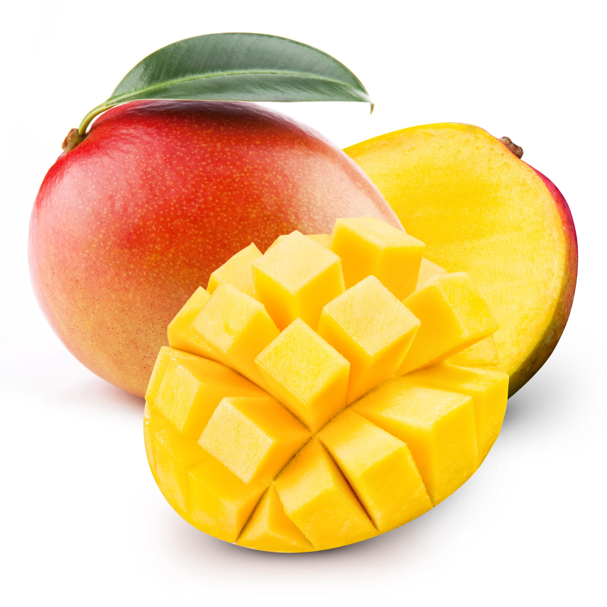

| Tier | Fruit 1 | Fruit 2 | Fruit 3 | Fruit 4 | Fruit 5 |
|---|---|---|---|---|---|
| S |  Mango |
Guinep | Jackfruit | Pineapple | Watermelon |
| A | Apple |  Lychee |
June Plum | Star Apple |
Strawberry |
| B | Orange | Grapefruit | Raspberry | Naseberry | Cantaloupe |
| C | Pear | Papaya | Blackberry | Honeydew | Apricot |
| D | Fig | Mulberry | Kiwi | Dragonfruit | Passionfruit |
| This ranking is based on my personal preferences. | |||||
Reflection
This is my seventh lab!! I have learned how to create forms and tables using HTML and how to format them using CSS. I used table tags like thead, tbody, tfoot, and scope attributes to make my content more accessible and easier to navigate. I also worked with several input types and attributes like required, aria-describedby, and maxlength to make my form user-friendly and accessible. W3Schools provided great additional resources, especially for understanding how the array part worked in the JavaScript section of the form, and MDN Docs for the object-fit in the CSS.